Two PRs fix what you saw: a portrait recording squeezed onto a blue gradient. Both were proven on their own preview environments, then confirmed by a second, independent agent that did not write the code. Test footage is a drawn stand-in, not a real person.
Verified#982 Library, inline player and filmstrip. Verified#983 the recorder. Still owed: one real iPhone take on the #983 preview.
A portrait video's card shows the whole frame over a blurred copy of itself. Landscape cards are unchanged, down to the exact image URL.
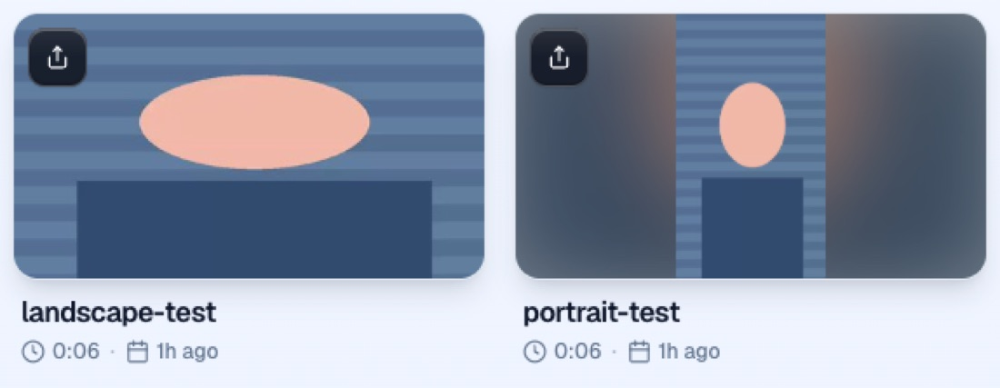
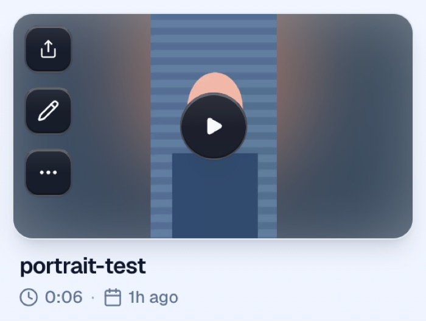
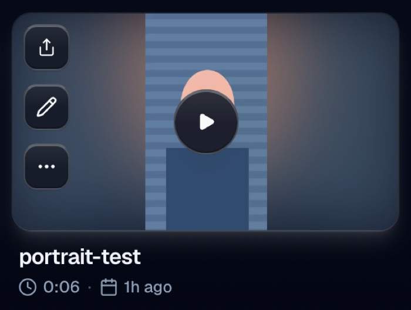
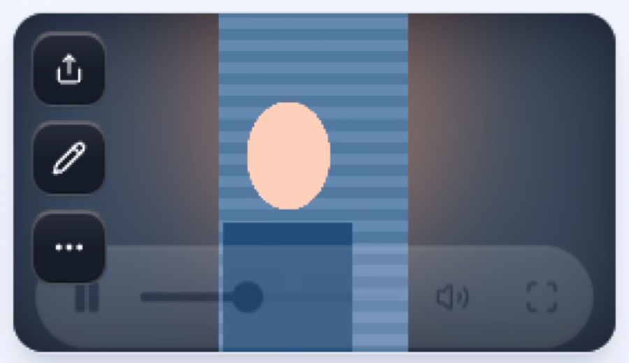
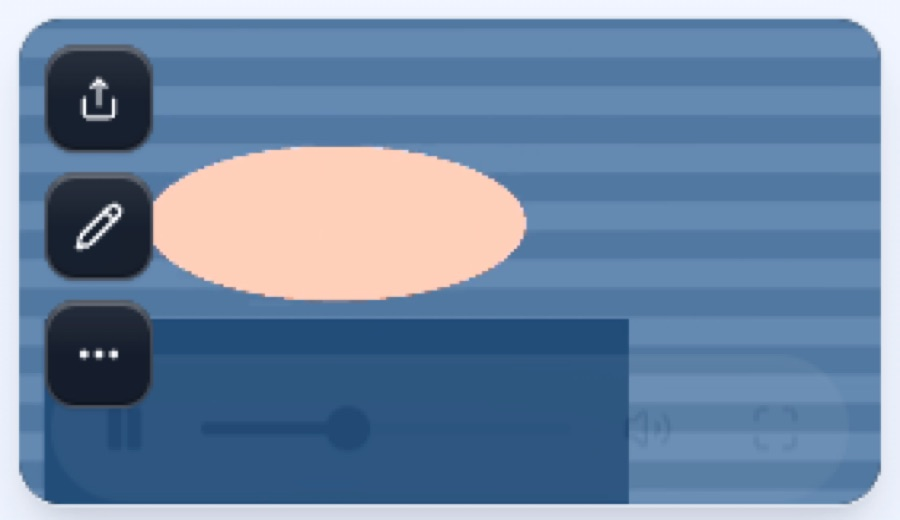
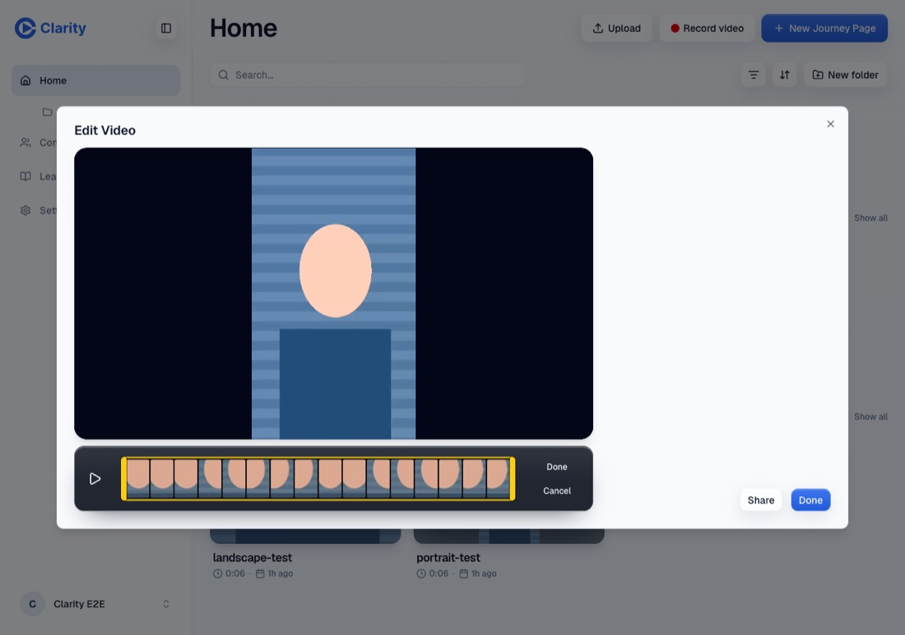
A take that starts with a phone held upright records the camera itself, so the video is portrait. The screen layouts and the camera picker lock for that take. Every other take keeps today's recorder, with a dark matte where the blue gradient was.
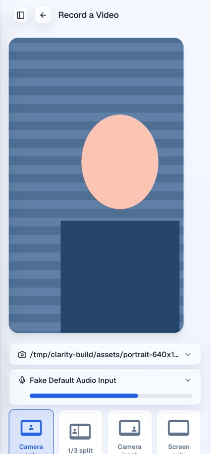
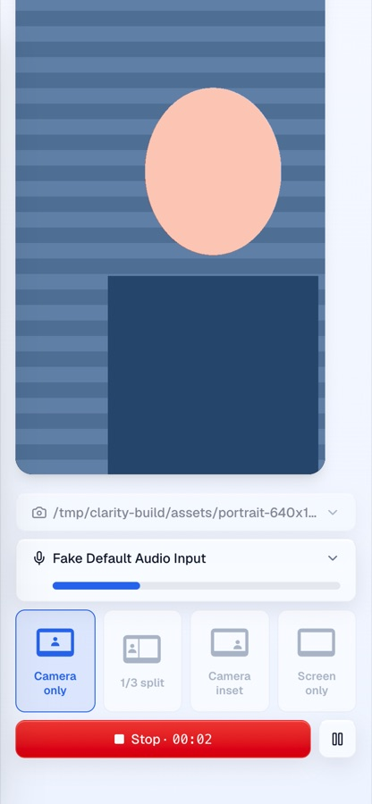
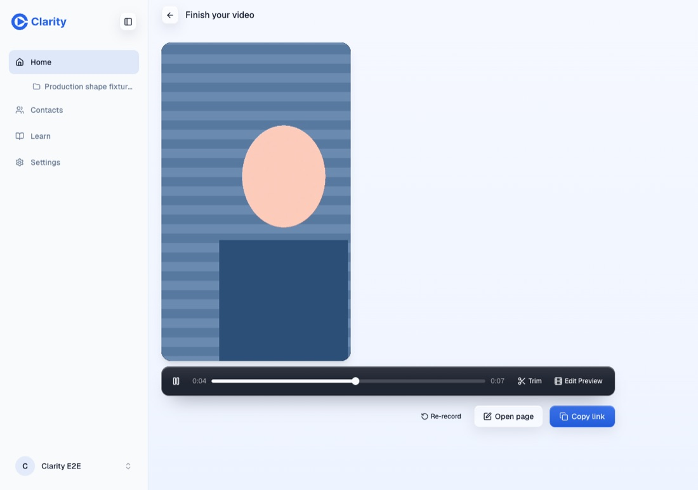
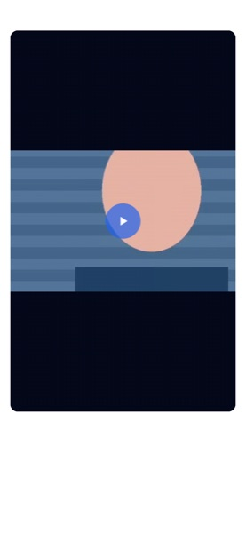
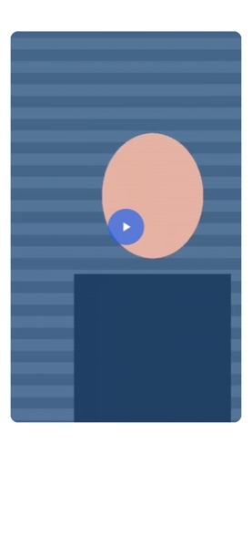
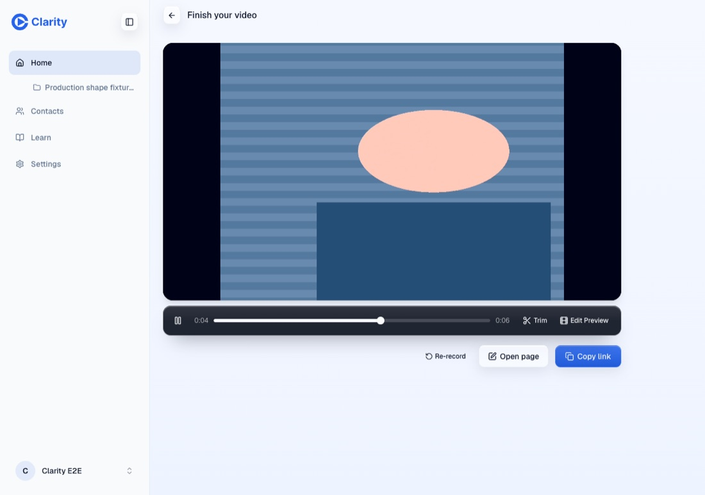
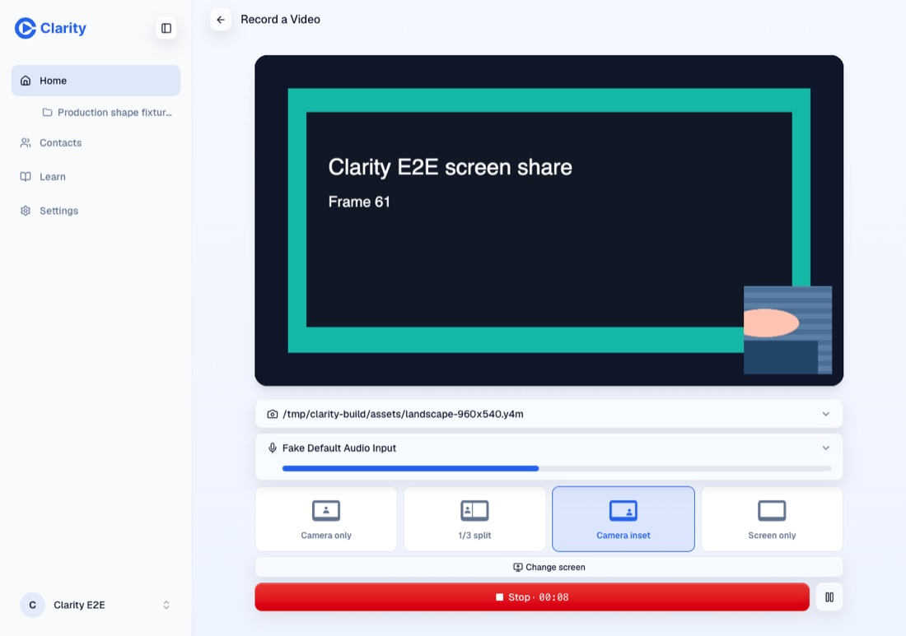
Checks behind these images: doctor green at each PR head, logged-in and logged-out runs in Google Chrome over IPv4, and an independent agent's report with byte-level facts (image URLs, computed styles, recorded file sizes, pixel samples). Published 2 October 2026.